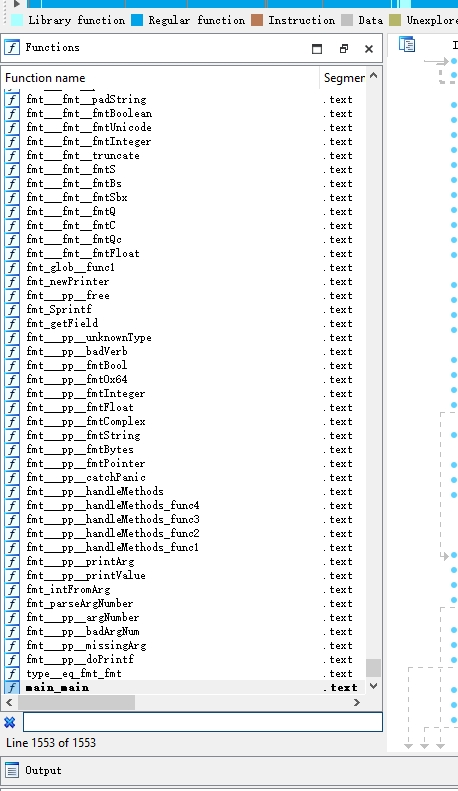
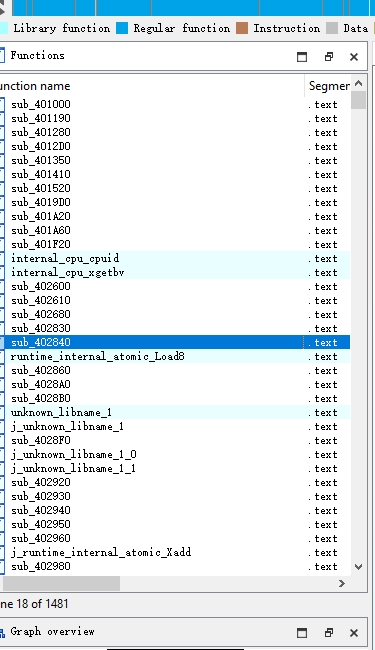

GO1.21.5分析
env
版本是1.21.5 最新 window10
pre
go编译出来是native代码，所以之间看原生函数吧。
ps: 由于是二进制的形式，这里go的数据类型识别，如字符串 数据，数据结构都不是重点。 在此不再过多描述，显得冗余。只关系具体的数据流和算法实现表现，和函数flow。
最主要的入口是
runtime_main在go执行时候首先进行的运行时初始化，判断当前包时lib还是执行程序，有没有进行功能性的函数hook， 这些代码是编译器模板化的代码， 这部分可以对照go的编译器源码生成的函数具体对待。
具体的分析来看，具体的分析切入点是什么，是分析一个网络程序还是分析追踪一个算法模块。这很重要。
难点
难点一 ：符号
一般发布的go默认带符号，别人的程序会不带符号 不带符号就是编译时候直接编译器添加ld flag：
-ldflags="-s -w"
效果如图：
before

after

这部分可用diff binary实现识别。
难点二：加二进制壳
常见的二进制壳：upx 等变种 此类壳主要是找到函数entry point.关键找到函数入口，需要动态调试和多次加载识别。
难度三：函数复杂性
函数的复杂性在于指令流和go编译器的自修改。 通常是通过修改go编译器来加入垃圾指令特殊原语。
这类分析主要是找到关键函数进行回溯数据，回溯栈，难点在于追踪，需要经验和时间。